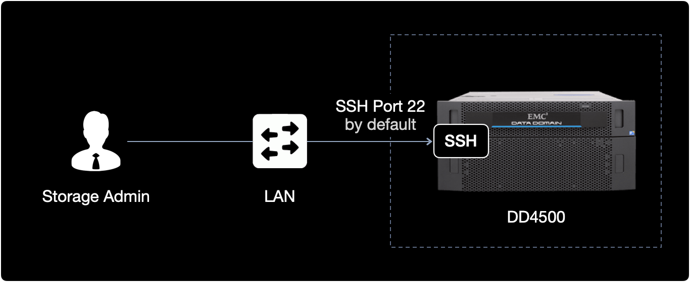
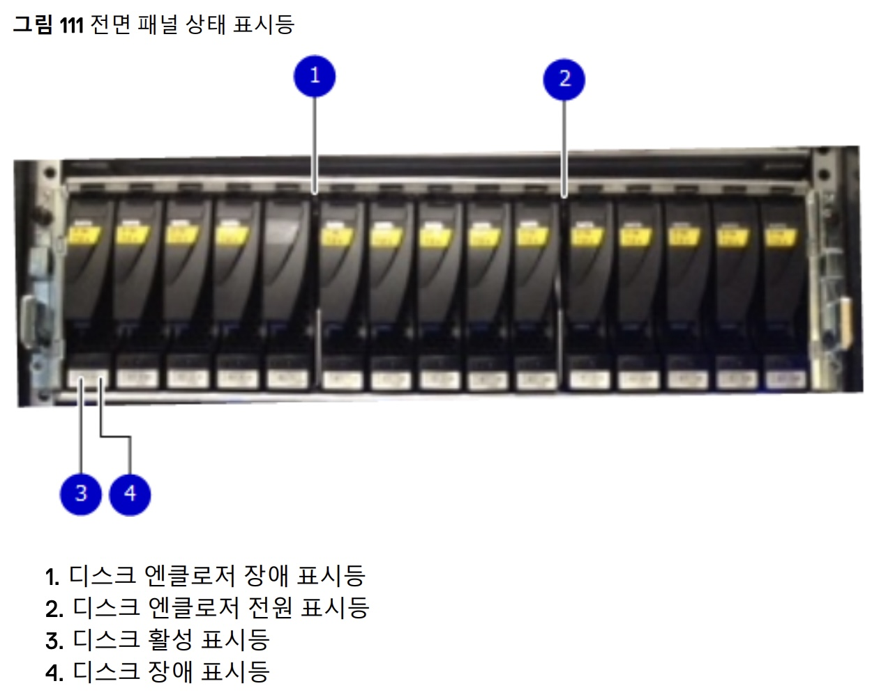
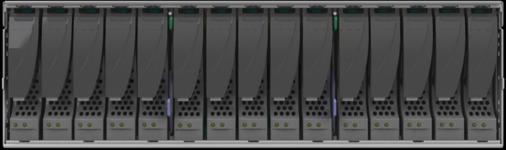

DD4500 디스크 교체와 spare disk 설정
개요
DD4500 백업장치의 폴트 디스크 교체 작업 시, 인적실수를 방지하고 안전하게 교체하는 정식 절차를 소개합니다.
환경
-
Hardware : EMC DD4500
EMC 사에서 만든 Data Domain 4500은 백업 및 아카이브용 데이터 중복 제거 스토리지 시스템입니다.
-
작업형태 : 데이터센터 현장의 하드웨어 작업과 CLI 작업이 혼합된 시나리오
전제조건
폴트 발생 디스크를 제거하고 신규로 투입할 교체용 디스크 파트를 준비합니다.
작업절차
failed disk 교체
1. SSH Login
작업 대상인 Data Domain 4500 장비에 SSH로 로그인합니다.
Data Domain 2500, Data Domain 4500 모델의 SSH 포트 기본값은 TCP/22로 설정되어 있습니다.

참고사항
Data Domain의 관리자가 Data Domain 명령어를 사용해서 SSH 포트를 TCP/22가 아닌 다른 포트로 변경할 수 있습니다.
2. Failed Disk 확인
DD4500의 전체 인클로저에 장착된 디스크 상태를 확인합니다.
$ disk show state
Enclosure Disk
1 2 3 4 5 6 7 8 9 10 11 12 13 14 15
--------- ----------------------------------------------
...
14 . . . f . . . . . . . . . . .
f 는 폴트 발생한 디스크Failed Disks를 의미합니다.
14번 Enclosure의 4번 디스크가 고장난 상황입니다.
3. 교체 대상 디스크 LED 표시
명령어 형식
$ disk beacon <enclosure-id>.<disk-id>
정상 디스크를 잘못 분리하는 인적 실수Human Fault를 방지하기 위해 고장난 Disk의 전면부 LED를 깜빡거리도록 표시하는 명령어입니다.
제조사인 EMC의 공식문서에서도 disk beacon 명령어를 실행한 상태에서 디스크를 교체하기를 권장하고 있다.
실제 수행 명령어
14번 인클로저의 4번 디스크 LED를 점멸blinking 시킵니다.
$ disk beacon 14.4
Ctrl + C 키를 누르면 LED 점멸을 중지합니다.
disk beacon 명령어를 실행하면 아래 사진 기준으로 3. 디스크 활성 표시등이 깜빡이게 됩니다.

참고사항
disk beacon 명령어를 실행해도 특정 슬롯의 디스크 LED가 동작하지 않는 경우가 있습니다.
이 경우, 디스크 LED의 고장도 의심해봐야 합니다.
아래 명령어를 사용해서 모든 디스크에서 상태 표시등이 깜박이는지 확인할 수 있습니다.
$ enclosure beacon
4. 디스크 교체
DD4500의 Enclosure 앞으로 이동합니다.

고장난 디스크를 제거(eject)한 후 신규 디스크를 장착(insert)합니다.
디스크 교체 직후 약 5분간 기다립니다.
교체한 디스크가 failed 상태에서 정상 상태인 spare 또는 In-use로 변화하는 데까지 시간이 소요될 수 있기 때문입니다.
디스크 교체 시 Data Domain이 동작하는 과정은 다음과 같습니다.
- Examine the newly inserted disk for any partitions that exist.
- If there are no partitions on the disk, then a number of partitions will be created. In one partition, specifically partition 3, will we create a DataDomain superblock. This disk will then become a spare disk as indicated by the ’s’ state above.
- If partition 3 exists, it is checked for the presence of a superblock. If a superblock exists and the superblock shows the information from another system, the disk will become a foreign or unknown.
- If partition 3 exists but there is no superblock, the disk will become a ‘v’ available disk.
5. Disk 상태 확인
전체 디스크 상태를 확인합니다.
$ disk show state
Enclosure Disk
1 2 3 4 5 6 7 8 9 10 11 12 13 14 15
--------- ----------------------------------------------
...
14 . . . v . . . . . . . . . . .
교체 후 4번 슬롯의 디스크 상태가 Failed Disks f에서 Available v로 변경되었습니다.
디스크 상태 표시 정보
인클로저의 디스크 상태는 크게 5가지로 구분됩니다.
| Symbol | State Name | Description |
|---|---|---|
. |
In-use Disks | 서비스 중인 정상 디스크. |
v |
Available Disks | 사용 가능하나 투입되지 않은 디스크. |
f |
Failed Disks | 고장으로 사용 불가능한 상태의 디스크. |
s |
Spare Disks | 예비 디스크. 다른 In-use 디스크가 고장시 투입됩니다. |
U |
Unknown Disks | 현재 상태를 알 수 없는 디스크. |
트러블슈팅
증상
고장난 디스크를 정상 디스크로 교체 후에 disk show state로 확인해보니, 해당 디스크의 상태가 정상이 아닌 Unknown으로 표시되는 상황.
$ disk show state
Enclosure Disk
1 2 3 4 5 6 7 8 9 10 11 12 13 14 15
--------- ----------------------------------------------
...
14 . . . U . . . . . . . . . . .
해결방안
디스크 상태 제어 명령어를 사용해서 교체한 디스크를 강제로 Online 상태로 전환시키면 됩니다.
교체한 디스크 상태가 이미 In-use
.또는 Spares일 경우 아래 조치방법을 실행할 필요 없습니다.
상세 조치방법
1. Disk 상태 변경 명령어를 실행
명령어 형식
특정 위치에 장착된 Disk 상태를 Unknown에서 Online 상태로 변경해주는 명령어입니다.
정확히는 disk unfail 기능을 사용하면 장애가 발생한 디스크를 운영operation 상태로 되돌립니다.
$ disk unfail <enclosure-id>.<disk-id>
실제 수행 명령어
14번 인클로저의 4번 디스크를 Online 상태로 변경합니다.
$ disk unfail 14.4
명령어 실행결과입니다.
The 'disk unfail' command will add the disk to the active stroage tier and mari it as a space. Any existing data on this disk will be lost.
Are you sure? (yes|no|?) [no] yes
ok, proceeding
중간에 실행여부를 묻는데 yes 입력 후 Enter 를 누릅니다.
Disk 상태가 Unknown에서 Online 상태로 변경합니다.
마지막에 ok, proceeding 메세지가 출력되면 새로 장착한 디스크가 활성화 스토리지 티어active storage tier에 정상적으로 투입 완료된 것입니다.
...
ok, proceeding
$ disk unfail 14.4
**** Disk 14.4 is already available.
disk unfail 실행 후 위와 같이 Disk x.x is already available. 메세지가 출력된다면 이미 해당 디스크는 available 상태를 의미합니다.
이 경우 disk unfail 명령어를 실행시킬 필요가 없습니다.
2. Disk 상태 재확인
unfail 조치한 디스크의 상태를 최종 확인합니다.
$ disk show state
참고자료
Dell EMC Data Domain Hardware Features and Specifications Guide (6.2 버전)
Dell EMC 메뉴얼 자료
디스크 교체 시 Data Domain이 동작하는 과정
Dell Community